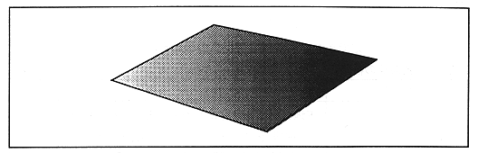
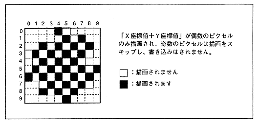

Return to previous page
｜
Return to menu
｜
Go to next page
Figure 3.8 Gouraud shading example

● Mesh processing
All parts can be meshed. When the mesh is applied, the part is drawn in a grid pattern every other dot.
Figure 3.9 Example of mesh processing

Return to previous page
｜
Return to menu
｜
Go to next page